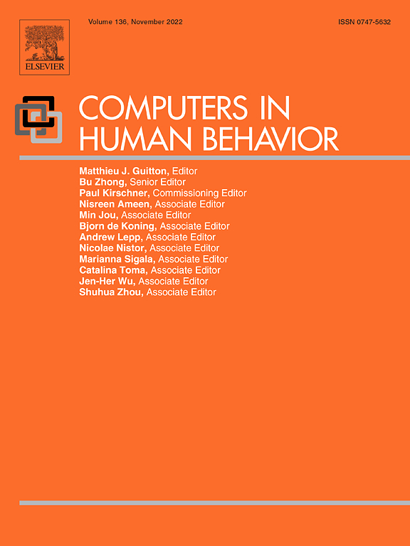

| My Role |
Team |
Affiliation |
Collaborator |
Timeline |
| Lead Quantitative Researcher |
Myself
3 Researchers
1 Data Engineer
1 Project Manager |
USC Annenberg Game Lab |
thatgamecompany |
Aug 2020 - Dec 2020 |
Problem
Massively multiplayer online games (MMOGs) offer social activities and foster in-game friendships. Despite this, social settings within these games can occasionally become toxic, marked by issues such as cyberbullying, harassment, and griefing. Such negative experiences can contribute to player churn. Existing literature indicates that promoting teamwork in MMOGs tends to result in positive, prosocial outcomes.
Impact
Identified design strategies to diminish player churn by enhancing positive interactions among players.
Research Questions
What strategies can be implemented to reduce in-game toxicity in Sky: Children of the Light?
In what ways does group play contribute to fostering positive in-game behavior among players?
Goals
Explore strategies for reducing in-game toxicity in Sky: Children of the Light.
Investigate group play and its contribution to fostering positive in-game behavior.
Research Design
Developed a survey questionnaire using Qualtrics.
Deployed the survey in Sky: Children of the Light in November 2020, reaching over 20,000 players.
Extracted six months of in-game player behavior log data (April to October 2020) through Google BigQuery.
Combined survey data and behavioral data for analysis.
After thorough data cleaning, focused on analyzing a total of 1,056 unique players.
Analysis
Prior to analysis, a residualized covariance matrix was generated by regressing all model variables on control variables, such as age, gender, and playtime. This pre-control aimed to account for variance contributed by covariates. Path estimates were computed using the residualized covariance.
Conducted path analysis in R employing the lavaan package.
Findings
Compared to solo players, group players were:
More popular in game among other players.
Displayed more generous behaviors to other players.
Gained more information from other players.
Received more emotional support from other players.
Positive Behavior Chain:
Engaging in group play fostered increased generosity.
This heightened generosity, in turn, resulted in more information exchange with other players and enhanced popularity.
Overall Observation:
By encouraging group play, the in-game community becomes an appealing space where players are inclined to stay, benefiting from an augmented number of generous participants and associated perks, such as increased popularity, potentially leading to a decreased churn rate.
Initial Recommendation & Action
Suggested increasing the implementation of group play activities.
Group activities were made mandatory for daily quests.
Challenges
Pushback from Solo Players
Players who preferred solo play expressed dissatisfaction and frustration, especially as daily quests were vital for in-game currency collection.
Communications
Navigating diverse stakeholder communication and aligning expectations between academia and industry.
Revised Recommendation & Action
Encouraged the development of organic (non-mandatory) group play activities to nurture generous behavior among players.
Group acvitivies were made as part of regular, optional, and non-time-bound tasks.
Room for Improvement
Regularly engage with stakeholders to assess the implementation progress of recommendations.
When resources permit, iteratively measure key metrics to continually assess player sentiment and facilitate ongoing improvements.
Analyzing the effects of forced group play versus natural group play can provide valuable insights into diverse gameplay behaviors.
Learn More
⬇ Click below to check out my first-authored journal article published in
Computers in Human Behavior based on this project.
